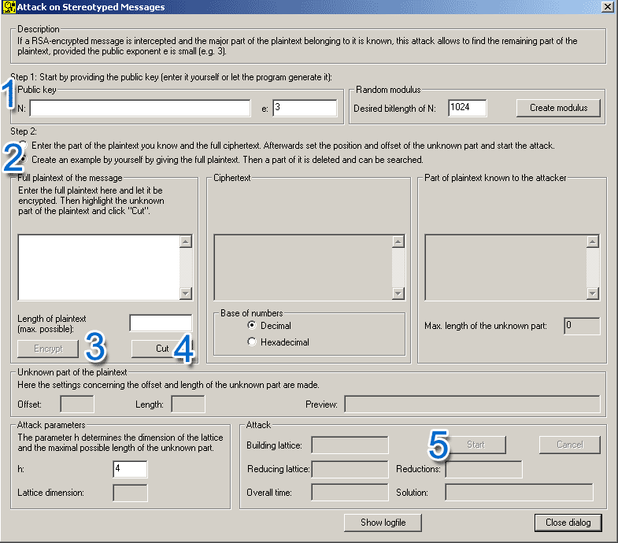

You can reach this dialog via the menu entry Individual Procedures \ RSA Cryptosystem \ Lattice Based Attacks on RSA \ Attack on Stereotyped Messages.
The dialog Attack on stereotyped messages
offers two different approaches:
1. Generate example input data and start an attack
Here you can generate an own example in the dialog which then
can be attacked. In addition, it has to be marked which part of the message is unknown.
This mode leaves unexperienced users with the option to try
out the capabilities and the limits of the attack.
2. Enter all input data manually and start the attack
By entering the public key, the known part of the message, and the ciphertext
the attack can be launched. After offset and length of
the unknown part are provided by the user, the attack can be started. This mode is
not recommended to inexperienced users.

First, the public key
(N,e)
is needed (ignore the field "desired bit length of
N").
Then, in "Step 2" of the dialog, the first radiobutton has to be
chosen and the complete ciphertext has to be entered.
Then, in "Step 3" of the dialog, the known part of the plaintext
has to be delivered. Furthermore, the offset and the length of the unknown part of
the message have to be entered. This can be done by entering them directly
into the textboxes or using the spin buttons. If the plaintext is already entered,
changes can be directly monitored in the "Preview" textbox: Here you see,
that "Length" many stars are inserted into the known plaintext -- starting
from the given offset.
In the "Step 4" group, the parameter h can be changed (h>1). A greater value fo h allows a bigger part of the message to be unknown, but an increase in this number results in a bigger lattice-dimension and thus negatively influences the runtime of the program.
To start the attack just click the "Start" button in section "Step 5" of the dialog.
N:
81310067042521973654412416255383522902083490331150101578762604997556337351877500251868504140980638835702886192443448896428977810893957566807779481557371020210138654283590601149334614497294215115728214075082663632500764651168005473090221075184203807588533522903997544767899971452793878122769013464319929212827
e:
3
Ciphertext (decimal):
75762050830648006314132960887315331648974069561264206858312424982664879616589030927769421532163693314271306061228215850461377786583482782397480153849655511217095601419134842131061003335859142592254645319509059791913787324022588737181121719463569440688425748225272034729177344946231277860225000833094616077032
Known part of the plaintext
(without the qoutes):
"Hello Bob!
Todays password is:
Sincerely, the boss."
Offset of the unknown part:
33
Length of the unknown part:
10
Then it should find the value for the password: "Roadrunner".